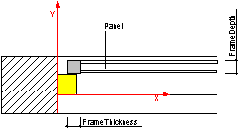

7.1.3.6 IfcWindowPanelProperties
| Propriétés des panneaux de fenêtre |
| Festdefinierte Merkmale der Fensterfüllung / des Fensterflügels |
A window panel is a casement, that is, a component, fixed or opening, consisting essentially of a frame and the infilling. The
infilling of a window panel is normally glazing. The way of operation is defined in the operation type.
The IfcWindowPanelProperties are used to parametrically describe the shape and operation of window panels. The parametric
definition can be added solely or additionally to the explicit shape representation of the window.
The IfcWindowStyle can define windows consisting of more then one panel. In this case, one instance of
IfcWindowPanelProperties has to be included for each window panel. The PanelPosition attribute, in conjunction
with the IfcWindowStyle.OperationType attribute, determines to which panel the IfcWindowPanelPropertiesapply.
The IfcWindowPanelProperties are included in the list of properties (HasPropertySets) of the
IfcWindowStyle. More information about the window panel can be included in the same list of the IfcWindowStyle
using the IfcPropertySet for dynamic extensions.
HISTORY New entity in IFC2.0, it had been renamed from IfcWindowPanel in IFC2x.
IFC4 CHANGE Supertype changed to new IfcPreDefinedPropertySet.
Geometry use definitions
The IfcWindowPanelProperties does not hold an own geometric representation. However it defines parameter, which can
be used to create the shape of the IfcWindowType (which is inserted by the IfcWindow into the spatial context of
the project).
The parameters at the IfcWindowPanelProperties define a standard window panel. The outer boundary of the panel is
determined by the occurrence parameter assigned to the IfcWindow, which inserts the IfcWindowStyle. It has to take the lining
parameter into account as well. The position of the window panel within the overall window is determined by the
PanelPosition attribute.
As shown in Figure 261, the panel is applied to the position within the lining as defined by the panel position attribute.
The following parameter apply to that panel: FrameDepth, FrameThickness.
 |
Figure 261 — Window panel properties |
XSD Specification:
<xs:element name="IfcWindowPanelProperties" type="ifc:IfcWindowPanelProperties" substitutionGroup="ifc:IfcPreDefinedPropertySet" nillable="true"/>
<xs:complexType name="IfcWindowPanelProperties">
<xs:complexContent>
<xs:extension base="ifc:IfcPreDefinedPropertySet">
<xs:sequence>
<xs:element name="ShapeAspectStyle" type="ifc:IfcShapeAspect" nillable="true" minOccurs="0"/>
</xs:sequence>
<xs:attribute name="OperationType" type="ifc:IfcWindowPanelOperationEnum" use="optional"/>
<xs:attribute name="PanelPosition" type="ifc:IfcWindowPanelPositionEnum" use="optional"/>
<xs:attribute name="FrameDepth" type="ifc:IfcPositiveLengthMeasure" use="optional"/>
<xs:attribute name="FrameThickness" type="ifc:IfcPositiveLengthMeasure" use="optional"/>
</xs:extension>
</xs:complexContent>
</xs:complexType>
EXPRESS Specification:
|
ENTITY IfcWindowPanelProperties
|
|
|
| ApplicableToType | : | (EXISTS(SELF\IfcPropertySetDefinition.DefinesType[1]))
AND
(
('IFCSHAREDBLDGELEMENTS.IFCWINDOWTYPE' IN TYPEOF(SELF\IfcPropertySetDefinition.DefinesType[1]))
OR
('IFCARCHITECTUREDOMAIN.IFCWINDOWSTYLE' IN TYPEOF(SELF\IfcPropertySetDefinition.DefinesType[1]))
); |
|
 EXPRESS-G diagram
EXPRESS-G diagram
Attribute Definitions:
| OperationType | : | Types of window panel operations. Also used to assign standard symbolic presentations according to national building standards.
|
| PanelPosition | : | Position of this panel within the overall window style. |
| FrameDepth | : | Depth of panel frame, measured from front face to back face horizontally (i.e. perpendicular to the window (elevation) plane. |
| FrameThickness | : | Width of panel frame, measured from inside of panel (at glazing) to outside of panel (at lining), i.e. parallel to the window (elevation) plane. |
| ShapeAspectStyle | : |
Optional link to a shape aspect definition, which points to the part of the geometric representation of the window style, which is used to represent the panel.
DEPRECATION The attribute is deprecated and shall no longer be used, i.e. the value shall be NIL ($).
|
Formal Propositions:
| ApplicableToType | : |
The IfcWindowPanelProperties shall only be used in the context of an IfcDoorType.
NOTE The deprecated entity IfcWindowStyle is applicable as well.
|
Inheritance Graph:
|
ENTITY IfcWindowPanelProperties
|
 Link to this page
Link to this page